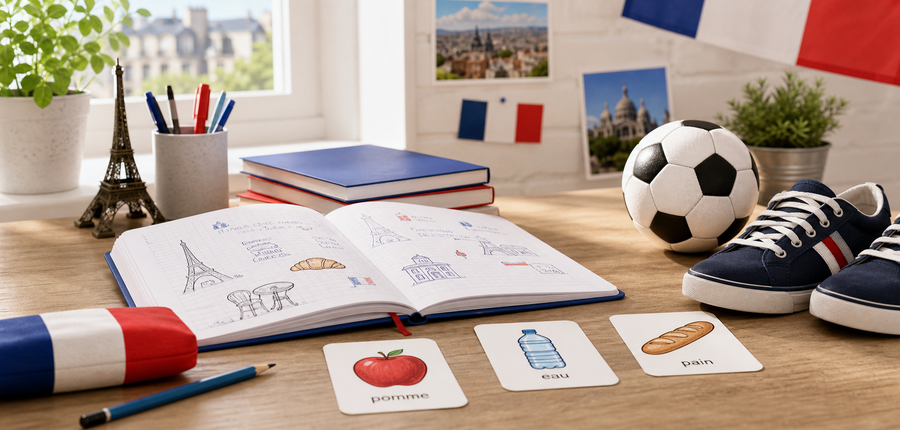
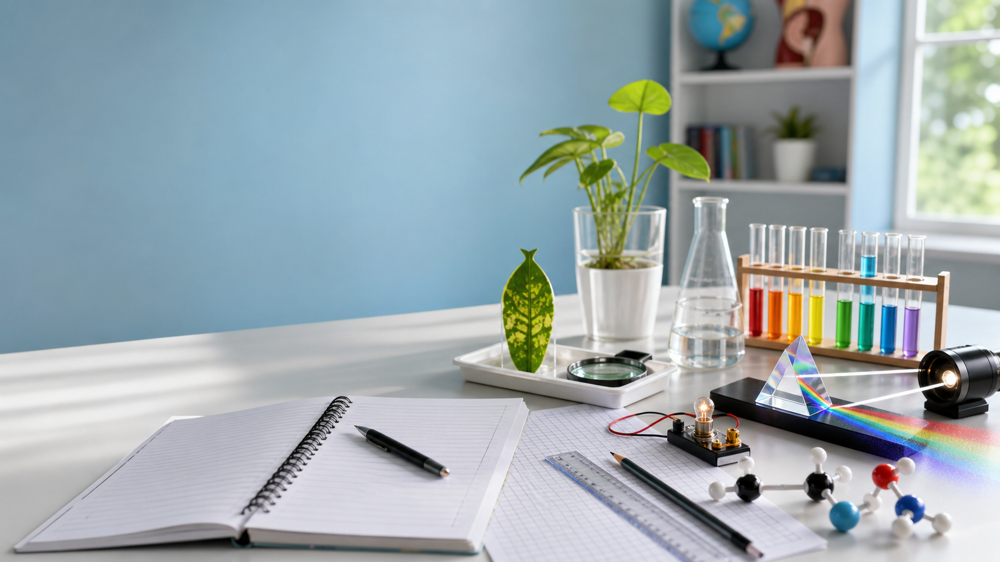
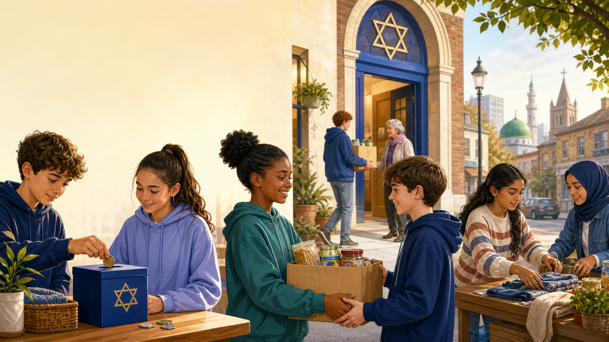

How it works
What catches people out
Useful shortcuts
Visual model
Example
Try three
Answer first, then reveal. No penalty for needing another set.
Year 7 maths revision
Pick a mission, learn the idea, dodge the classic traps, then test yourself. Built for quick revision without babyish fluff.
Visual model
Answer first, then reveal. No penalty for needing another set.
Year 7 French revision
Food, drink, sports, healthy lifestyle phrases, negatives, and future tense practice for the test. Short missions, lots of reveal-answer questions, and useful facts along the way.

Year 7 science common entrance
Biology, Chemistry, Physics and Working Scientifically revision structured around Common Entrance style questions. Use each card to revise the content, answer the question, then reveal the mark scheme.

Year 7 religious education
Follow a story about a community under pressure, then explore how different religions turn compassion into service, equality and care. The focus is Judaism's Tzedakah: giving as justice, not just spare change.
